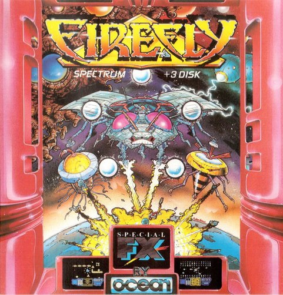
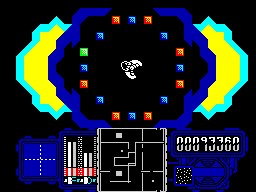
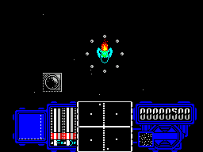

Firefly


{kind=link}

| Publisher: | Ocean |
| Price: | £7.95 Cassette, 14.95 Disk |
| Year: | 1988 |
| Source: | CRASH, Issue 50 |

Firefly is an abstract shoot-’em-up — there’s no saving-the-world scenario, just a colourful, nail-biting challenge.
It starts on a grid five squares by nine. Down the left-hand side is a row of white squares, and that’s where you start in your firefly craft. The aim is to reach a green switch on the opposite side of the grid by moving one square at a time.

Planets and blue triangular symbols are scattered across the board, as well as blank squares. You can land quite safely on a blank square, but landing on a blue square — sometimes essential — presents you with two icons: a thumbs-up and a thumbs-down.
Landing on the thumbs-up allows you a clear path across that particular square, but if you land on the thumbs-down the grid is rearranged and the firefly craft damaged.
So with luck you can move the craft onto the nearest blank space. What then? Well, the craft is shown inside a maze dotted with generators, and the aim of this subgame is to destroy them.
You can enter each generator after collecting four bubble-like structures — and once you’re inside the generator, another set of thumbs-up/thumbs-down icons appears. To destroy the generator, hit the thumbs-up — if you hit the thumbs-down by mistake, you lose the bubble structures and again sustain a hefty amount of damage.
And the mazes are inhabited by myriad aliens, ruthlessly efficient at destroying intruders. But some fish-shaped aliens, helpful little chaps, shed water droplets when shot. Collecting these replenishes lost energy and repairs the scratches and dents on the firefly craft.

A handy map at the bottom of the screen shows where all the generators are; some are isolated and can only be reached by teleporter. There’s another challenge: on entering the teleporter, you’re confronted by your own ship surrounded by a circle of alternating red and blue squares. To activate the teleporter, just shoot three blue squares in a row — but with each one shot the action speeds up, so a sharp eye is essential!
When all the generators have been destroyed in that particular sector, the display reverts to the opening grid screen, and the square you’ve just cleared is now coloured white. And you carry on zipping through these tests of skill and concentration till the green switch is reached.
CRITICISM
“Mix together a shoot-’em-up, a collect-’em-up and a maze game, add sundry reaction tests to taste and you’ve got a tasty game indeed. Firefly lacks nothing in graphics and gameplay. Most of the graphics are monochrome, but the player’s ship is very nicely drawn and coloured, right down to the satisfying burst of flame which the thrusters emit. The varied action is very stimulating, even though success in the rather silly reaction games is so vital to progress. The difficulty level of these subgames turns out to be fiendishly pitched; they start off quite easy but soon become ‘close your eyes and hope’ situations, which might put off the impatient. But Firefly’s addictive challenge would soon entice them back.”
PAUL ... 92%
“Firefly is one of the best games I’ve played for a long time, though it doesn’t sound like much till you’ve tried it — the graphics are the usual high-quality shoot-’em-up stuff and the gameplay, though original, loses something in verbal description. But there’s addictiveness in oil-tankerfuls; I played Firefly solidly for four hours without wanting a break! Colour is used nicely, and the sprites are very well-designed; the only complaint I have is that the abort key (BREAK) is too close to the P key on the +2 and +3, which many people use to move right. >But forget the nit-picking; all shoot-’em-uppers should have Firefly.”
MIKE ... 94%
“Maybe Firefly’s gameplay isn’t entirely original — but with this sort of quality who cares? The scrolling is faultless, the game immensely playable an the graphics are very, very good, reminiscent of the old Ultimate style. And Firefly’s addictiveness is deceptive: once you start playing, it drags you in and that’s it, you’re hooked! The visual patterns can start to get hypnotic if you’re not careful... If I were really pushed to find fault, I’d say the teleporter sequence is just a shade too fast — but that’s a minor quibble. Firefly virtually overflows with quality, style and sheer excellence.”
ROBIN ... 91%
COMMENTS
| Joysticks: | Cursor, Kempston, Sinclair |
| Graphics: | Large and varied monochrome areas, with detailed and smoothly-animated backgrounds and characters |
| Sound: | Great title tune on both 48K and 128K versions, plus vitally important sound effects |
| General rating: | What more could an arcade freak want? |
| Presentation: | 92% |
| Graphics: | 89% |
| Playability: | 94% |
| Addictive qualities: | 95% |
| Overall: | 92% |